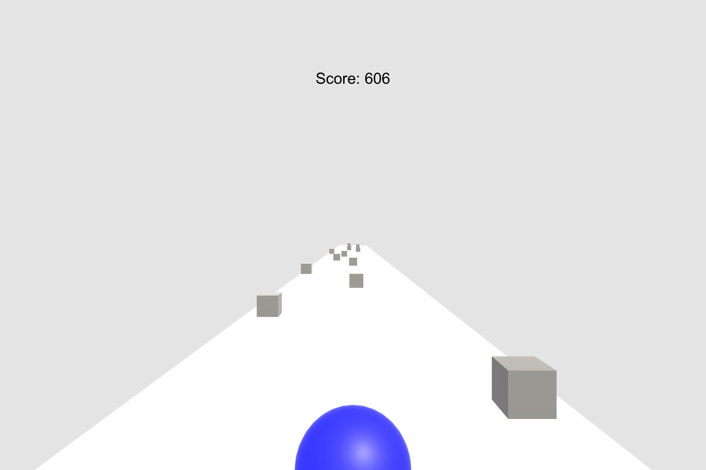
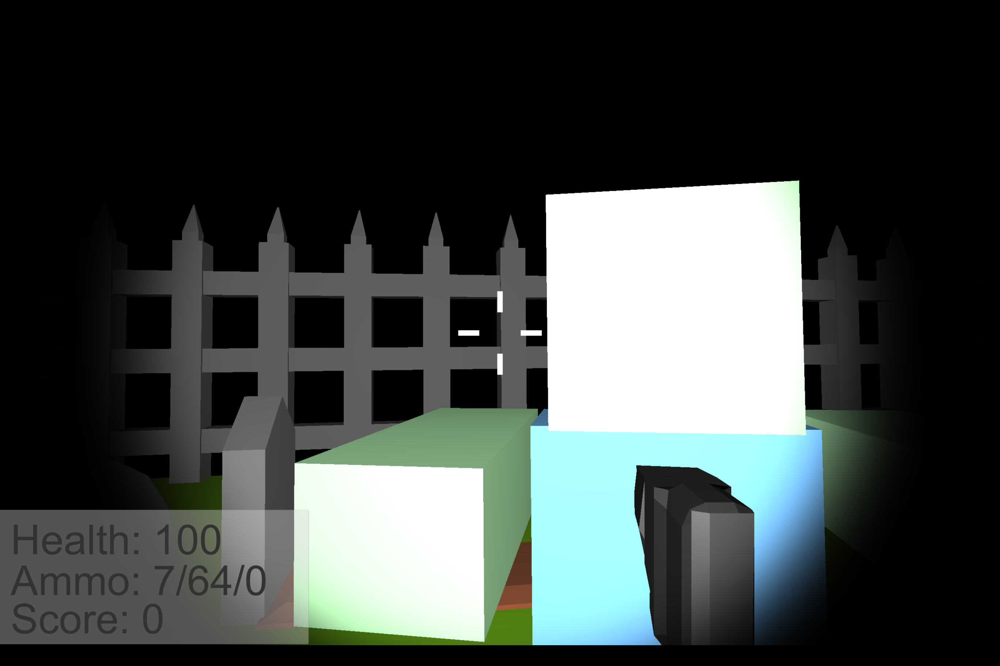
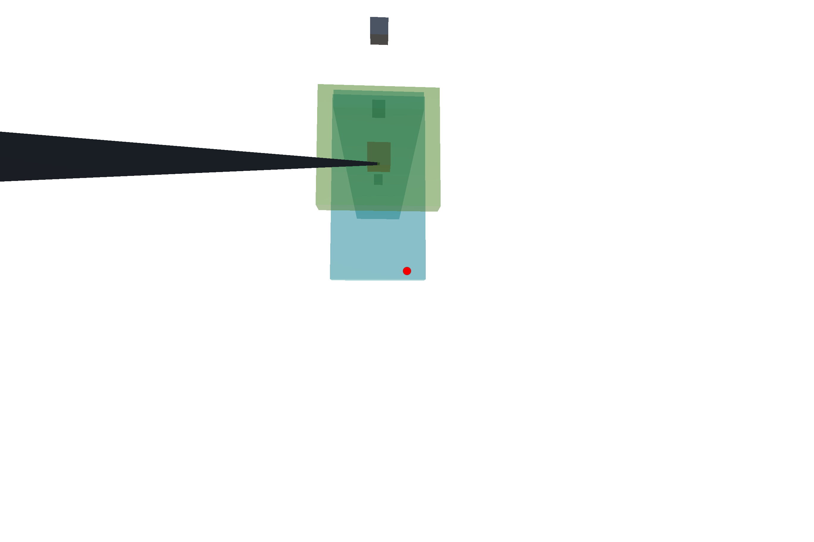

The first game I designed in C#. A basic infinite slider game where you can collect mystery boxes that will either help or hurt you.

Download Game
Graveyard Rush, one of my more advanced games. Survive endlessly, collect powerups and kill zombies to gain points which can be used to customize your gear.

Download Game
Grappling Guy. A simple game where you must swing around the enviroment and reach the goal without hitting any objects.

Download Game